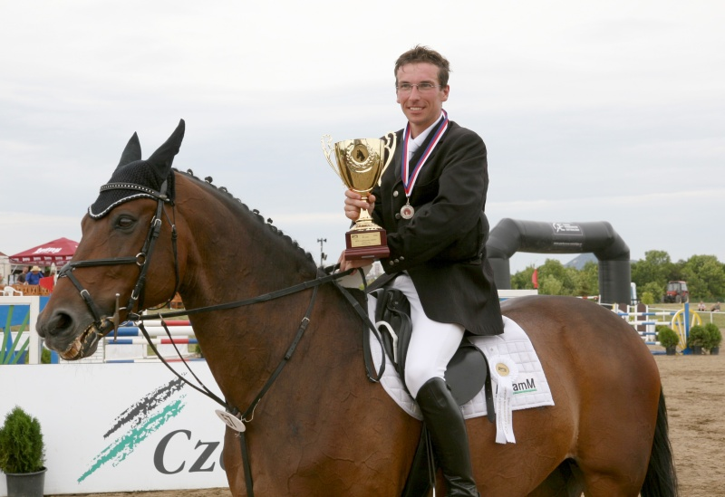

Sportovní koně se pod vedením profesionálního trenéra se zúčastňují parkurových soutěží v ČR a kritérií mladých koní
s cílem ověřit v praxi naše výživářské doporučení. Velký důraz je kladen též na výcvik mladých jezdců a rozvoj jezdeckého sportu v našem regionu.
JK Agramm vznikl v roce 1997 za účelem provozování turistického ježdění a základního výcviku mladých jezdců, disponoval 9 až 10 ti jezdeckými koňmi,
kteří byli pro účely ježdění zapůjčeni od několika majitelů a byli ustájeni v pronajatých stájích na farmě v Pozlovicích. Prvním vlastním sportovním koněm JK byla klisna Cerenda.
Příchodem trenéra Vlastimila Daňka v roce 2002 se JK začal více zaměřovat na sport. V roce 2004 se JK přestěhoval do vlastních stájí v podzámčí Nového Světlova v Bojkovicích.
Podzámčí nabízí boxové ustájení pro 12 sportovních koní a volné ustájení pro 16-20 mladých koní a kobyl. Je zde vybudována krytá hala 60 x 25 m. Nejlepší sportovní koně dosahují výkonnosti „T“.
V roce 2008 získal Tomáš Daněk s koněm Silvio stříbro na Mistrovství ČR 2008 v parkurovém skákání v Mostě.
